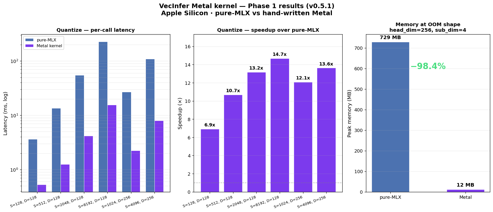

VeloxQuant-MLX compresses the KV cache of any mlx_lm model —
up to 16× smaller, with near-identical output quality.
Plug in with three lines of code.
Implements peer-reviewed research from
What is a KV cache?
Every time an LLM generates a token, it reads back the key and value tensors for every previous token in the context. These tensors are stored in RAM — that's the KV cache. At long contexts, it dominates memory: a 7B model at 128k tokens needs ~25 GB of KV cache alone, even on a compressed model.
What does VeloxQuant-MLX do?
It quantizes those tensors on the fly — trading a few bits of precision for dramatically less RAM. At 16× compression, a cache that needed 25 GB needs under 2 GB. Same model. More context. Runs on your Mac with near-identical output quality and unchanged mlx_lm API.
Why VeloxQuant-MLX
Measured on real Apple Silicon hardware across 10 production models. All numbers from end-to-end generation — not synthetic benchmarks.
Algorithms
Each method targets a different point on the compression–quality–throughput tradeoff curve. All are zero-calibration and mix-and-match per layer with RateQuant. Filter by trait below, or expand the release history.
stream_n_sink sink tokens and the most recent stream_window_size tokens; the cache never grows beyond a fixed bound.snap_budget tokens from prefill by observation-window attention scoring, dropping the rest.hi_bits while the rest stay at lo_bits.X ≈ Quant_b(X) + L·R + S).[S, r] codes instead of full fp16, for a full-KV rate below 1 bit/element.Not sure which to use? Choose by goal:
q @ K.T is preserved exactly. At 1 bit/elem, a 128-dim key becomes 16 bytes instead of 256 — 16× compression.
quantize_vq keeps argmin in thread-local registers — 13× faster, 98% less peak memory, no API change required.
calibrate_spectral_rotation(model, tokens) auto-detects architecture (including Gemma 4 multimodal), wraps sliding-window caches, and caches rotations to disk. Works with all mlx-community models.
quantize(rotate(x)) ≠ rotate(quantize(x)). CommVQ trains codebooks on pre-RoPE keys and projects each centroid onto the RoPE-commuting subspace (symmetrising paired dims), so RoPE can be applied exactly at decode time.
mx.hadamard_transform, O(D log D)rabitq_hamming_scoremagnitude × shared_directionbits per symbol on that stream — a lossless storage win on top of the lossy quantization.
stream_n_sink token positions (frozen attention sinks) and the most recent
stream_window_size tokens (rolling FIFO). All other positions are permanently
evicted. Zero calibration, zero scoring — purely structural and positional.
stream_n_sink positions kept forever (attention sinks always receive high weight)stream_window_size, oldest token is evicted from the front[sink_rows || recent_rows] to the model; total positions ≤ stream_n_sink + stream_window_sizeh2o_budget, the lowest-score non-sink token is permanently
evicted — the cache stays at most h2o_budget positions throughout generation.
h2o_n_sink protected)h2o_budget positionstova_budget, the lowest current-step-weight non-sink token is evicted — and the
weights are then discarded. The cache stays at most tova_budget positions.
tova_n_sink protected)pyramid_beta=1.0)
reduces exactly to H2O.
pyramid_budgets(n_layers, avg, β) gives a decreasing schedule, e.g. 12 layers @ 512 → [1019, 927, …, 97, 5] (mean 512)for_model build time; no runtime coordinatorsnap_obs_window key rows attend to all prefix keys via scaled softmax[S] importance score per tokensnap_budget tokens (plus snap_n_sink always-keep sinks)hi_fraction of tokens flagged salient, the rest are nothi_bits, the rest at lo_bits, both per-channel group quantX ≈ Quant_b(X) + L·R + S. Unlike CacheGen (reconstruction identical to group quant), GEAR's reconstruction genuinely recovers quality the base bit-width loses. Zero calibration.
E = X − dequant(Quant_b(X)) gives L·Rbase + L·R + S to fp16 for SDPA[S, r] directly and reconstructs full keys/values to fp16 only at attend time. Unlike SVDq (keys-only, reconstructs full fp16 so the win is bandwidth accounting), PALU bypasses the parent fp16 buffer entirely and compresses both keys and values — a full-KV effective rate below 1 bit/element on low-rank data. Zero calibration.
[S, r], never full [S, D] fp16; the parent ring buffer is never populatedL @ Vᵀ + μ rebuilds fp16 K/V for SDPA; storage stays compactNew in 0.5.1
The VecInfer hot path is now a 30-line Metal Shading Language shader, JIT-compiled by mx.fast.metal_kernel on first use. Same Python API; the cache auto-detects Metal and dispatches to the fast path.

Benchmarked on Apple Silicon GPU.
[N, n_centroids, sub_dim] diff tensor never gets materialized.use_metal_kernels=False for parity testing. 7 dedicated parity tests; 662 tests passing.// One thread per sub-vector. Argmin lives in registers — no diff tensor. uint vec_idx = thread_position_in_grid.x; uint N_total = x_shape[0]; if (vec_idx >= N_total) { return; } uint n_centroids = codebook_shape[0]; uint sub_dim = codebook_shape[1]; uint x_base = vec_idx * sub_dim; float best_dist = INFINITY; uint best_idx = 0; for (uint c = 0; c < n_centroids; ++c) { uint cb_base = c * sub_dim; float dist = 0.0f; for (uint i = 0; i < sub_dim; ++i) { float d = float(x[x_base + i]) - float(codebook[cb_base + i]); dist += d * d; } if (dist < best_dist) { best_dist = dist; best_idx = c; } } out[vec_idx] = best_idx;
Quickstart
mlx_lm in 3 linesSame mlx_lm.generate API — just pass a compressed cache.
import mlx_lm from veloxquant_mlx import KVCacheBuilder, KVCacheConfig model, tokenizer = mlx_lm.load("mlx-community/Llama-3.1-8B-Instruct-4bit") # 7.5× key cache compression — within 5% of fp16 throughput config = KVCacheConfig(method="turboquant_rvq", bit_width_inlier=1, seed=42) caches = KVCacheBuilder.for_model(model, config) response = mlx_lm.generate( model, tokenizer, prompt="Write a 5,000-word analysis of the RLHF literature.", max_tokens=5000, prompt_cache=caches, )
import mlx_lm from veloxquant_mlx import KVCacheConfig, KVCacheFactory from veloxquant_mlx.allocators.vecinfer import calibrate_smooth_factors, train_codebook model, tokenizer = mlx_lm.load("mlx-community/Qwen2.5-7B-Instruct-4bit") # One-time calibration — run once, cache the results smooth = calibrate_smooth_factors(sample_keys) # [n_heads, head_dim] codebook = train_codebook(sample_keys_flat, n_centroids=256, sub_dim=8) # 16× key compression — Metal kernel auto-detected for 13x faster quantize config = KVCacheConfig( method="vecinfer", head_dim=128, key_codebook_bits=8, # 256 centroids key_sub_dim=8, # 16× compression at 1 bit/elem smooth_factors=smooth, key_codebook=codebook, use_metal_kernels=None, # None=auto, True=require, False=forbid ) caches = KVCacheFactory.create_for_model(model, config) response = mlx_lm.generate( model, tokenizer, prompt="Write a 5,000-word analysis of the RLHF literature.", max_tokens=5000, prompt_cache=caches, )
from veloxquant_mlx import ( KVCacheBuilder, KVCacheConfig, calibrate_layer_sensitivities, # 1.6s one-time probe allocate_bits_ratequant, # Theorem 2 reverse-waterfilling ) # Step 1 — probe real activations weights = calibrate_layer_sensitivities(model, tokenizer) # Step 2 — closed-form allocation; average is exact alloc = allocate_bits_ratequant(weights, target_avg_bits=1.5, beta=3.5) # alloc = [1, 2, 1, 1, 3, 1, 2, ...] one int per layer # Step 3 — build per-layer caches config = KVCacheConfig(method="turboquant_rvq", bit_width_inlier=alloc) caches = KVCacheBuilder.for_model(model, config)
import mlx_lm from veloxquant_mlx.spectral.calibrate import calibrate_spectral_rotation from veloxquant_mlx.spectral.spectral_quant import SpectralQuantizer model, tokenizer = mlx_lm.load("mlx-community/Qwen2.5-7B-Instruct-4bit") # Step 1 — one-time calibration (~10s). Rotations are cached to disk. tokens = tokenizer.encode("calibration text here", return_tensors="mlx") rotations = calibrate_spectral_rotation( model, tokens, model_name="qwen25_7b", # cached to ~/.cache/veloxquant/ ) # Step 2 — build per-layer SpectralQuant caches caches = [] for i, layer in enumerate(model.layers): key_U, _, _, _, key_ds, _ = rotations[i] sq = SpectralQuantizer( d=128, b_signal=3, b_noise=3, rotation=key_U, d_s=key_ds, apply_qjl=False, ) caches.append(sq) # wrap in mlx_lm-compatible cache # Step 3 — generate as usual; 5.95× compression, +7–10pp quality vs TurboQuant response = mlx_lm.generate( model, tokenizer, prompt="Explain quantum entanglement in simple terms.", max_tokens=1000, prompt_cache=caches, )
Benchmarks
All numbers from end-to-end mlx_lm.generate with a 200-token prompt, 120-token generation. Apple M-series, unified memory. Bar width = compression ratio relative to 16× max.
| Model | FP16 baseline tok/s |
RVQ-1bit tok/s vs fp16 |
RVQ compression key cache ratio |
VecInfer-1bit tok/s vs fp16 |
VecInfer compression key cache ratio |
Best pick |
|---|---|---|---|---|---|---|
| SmolLM2-135M | 250.4 | 188.5 | 175.8 | RVQ-1bit | ||
| Llama-3.2-1B | 105.4 | 104.3 | 91.2 | RVQ-1bit | ||
| Llama-3.2-3B | 47.6 | 46.2 | 40.2 | RVQ-1bit | ||
| Llama-3.1-8B | 20.5 | 20.6 | 19.6 | RVQ-1bit | ||
| Mistral-7B | 23.6 | 22.8 | 9.8 | RVQ-1bit | ||
| Qwen2.5-7B | 21.0 | 20.7 | 21.5 ↑ fp16 | VecInfer-1bit | ||
| Qwen3-8B | 20.3 | 19.6 | 2.4 | RVQ-1bit | ||
| Phi-4 | 10.4 | 8.1 | 4.0 | TQ-2bit (9.6) | ||
| Falcon3-7B | 17.3 | 21.7 | 17.0 | RVQ-1bit | ||
| gemma-3-4b | 26.0 | 24.2 | 22.6 | VecInfer-1bit |
See the full algorithm details and decision guide in the Algorithms section above.
Installation
Requires Apple Silicon (M1 or later) and Python 3.11+.
pip install VeloxQuant-MLX
pip install "VeloxQuant-MLX[dev]"
git clone https://github.com/rajveer43/VeloxQuant-MLX
cd VeloxQuant-MLX
pip install -e ".[dev]"